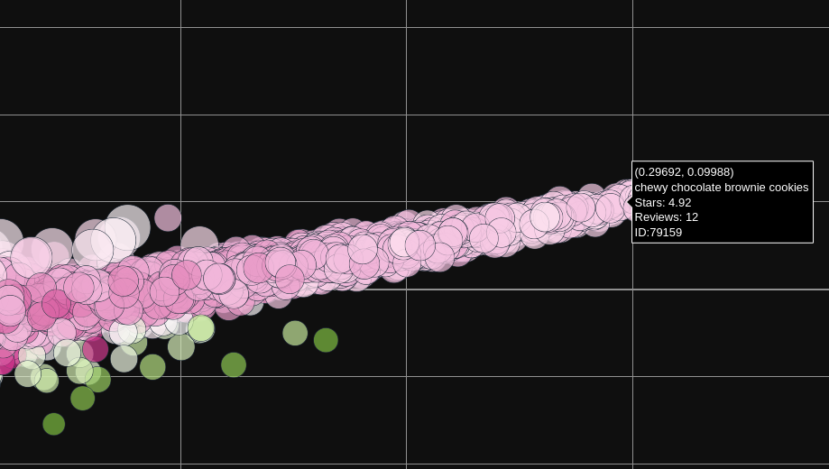
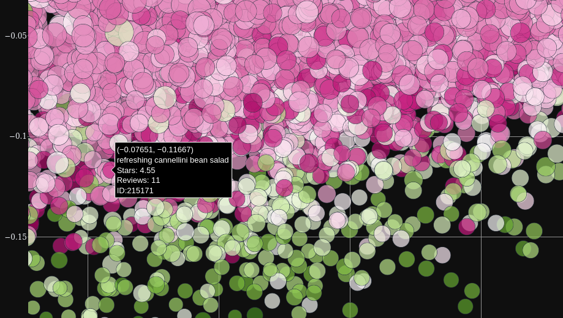
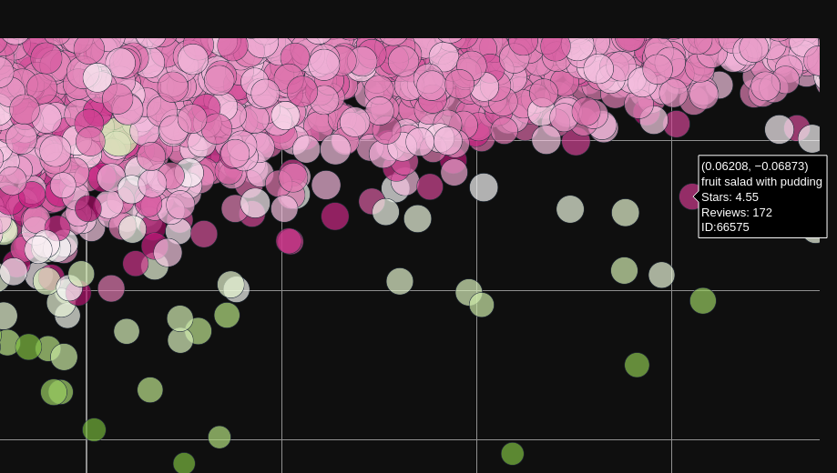
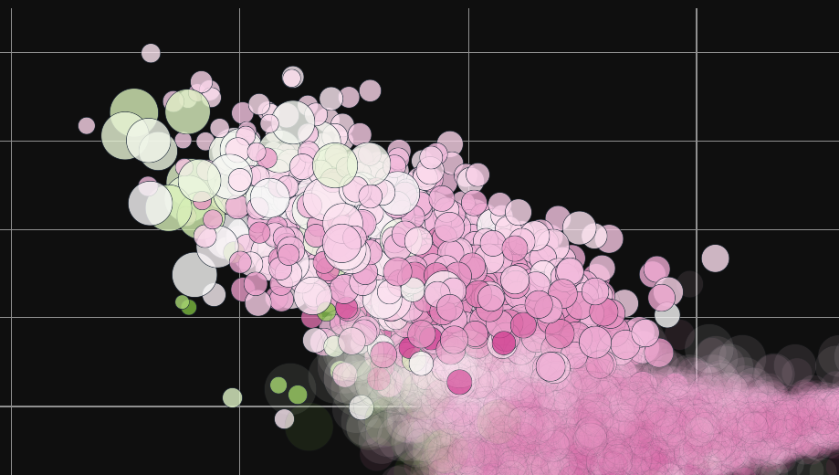
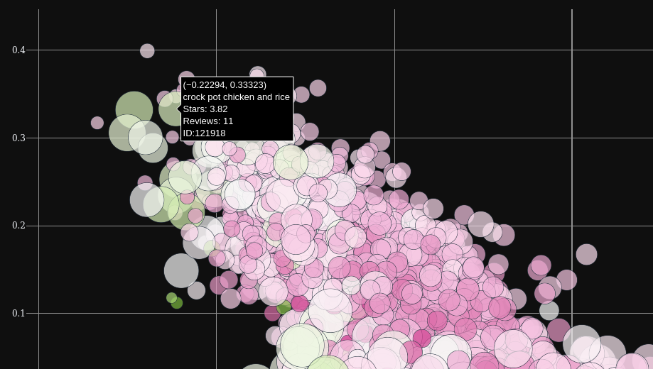
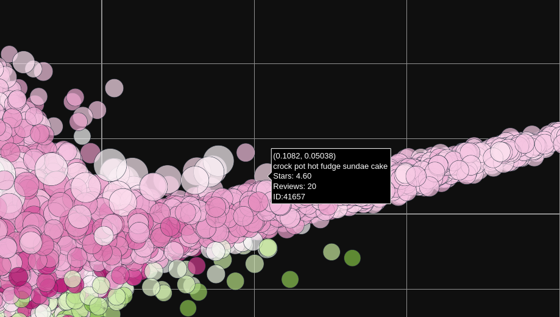

Embedding Recipes using Kernel PCA
Fri, 04 Nov 2022
Data Science, Data Visualization, Machine Learning
The previous post discusses Kernel PCA and recipes, or formulae, for deriving new kernels from known good kernels. This post applies these approaches to generate vector embeddings in a specific domain:
culinary recipes. The idea is to find a low-dimensional representation of recipes such that points in the embedding space are neighbors to similar recipes.
Data Source
The data in this post comes from Kaggle. Specifically, a tabular dataset of recipes is obtained from
this page, which states that the data was scraped from a popular recipe website.
To both reduce the dimensions of the Gram matrix and filter less relevant results, only recipes with at least 10 ratings and an average score of 3.5 (out of 5) or more are preserved. After this filtering, roughly 7.2% of the original samples, or 12,858 recipes, remain.
Kernel Recipes
A total of seven kernels are utilized. The ultimate kernel employed is a weighted sum of the seven. A brief description of each of the kernels is provided in the following list:
- Jaccard similarity of:
- Tokens from the name
- Ingredients
- Tags
- Tokens from the description
- Tokens from the recipe steps
- Cosine similarity of prep information: time, steps, and ingredient count
- Cosine similarity of the nutrition vector: fat, protein, etc.
The name, ingredient, and tag kernels are weighted heavier, accounting for nearly 90% of the overall weight. However, the low weighting from the dot-product kernels is somewhat offset by the higher magnitude values produced by those kernel.
Interactive Recipe Embedding
Next, a scatter plot is constructed to visualize the recipe data. The
x,
y,
size, and
color axes are respectively used for the first 4 kernel principal components. Mouse controls allow for zoom-in and zoom-out via click-and-drag and double-click respectively. Clicking on the points opens a new tab to the associated recipe. The interactive scatter chart is available on my github.io page:
Interactive Recipe Scatter Chart
A long arm of points containing primarily carbohydrate-rich recipes extends gradually upwards to the right of the plot. The base of the arm contains more bread and cake-like recipes but this gradually transitions to more cookie or brownie-like desserts as the arm is traversed rightward.

Figure 1: The Great Arm of Dessert-itude
One point to note is that often recipes appear close to each other according to the
x and
y-axes, but are actually far apart according to their size and/or color. For instance, in the following area
deep red points seem to be strongly associated with salad.

Figure 2: Red Point Salad
The region in Figure 2 contains more savory salads. However, as one follows the red points along "The Great Arm of Dessert-itude," savory salads give way to fruit, jello, and other dessert-like salads.

Figure 3: From Savory Back to Sweet
The controls on the top left enable filtering for or highlighting points with hover-text containing some arbitrary string. From this, it can be seen that recipes involving chicken cluster in the top left of the plot.

Figure 4: Chicken Central
Another interesting pattern is that the recipes corresponding to the largest points all seem to involve using a crock-pot. In the chicken region, the large points correspond to crock-pot recipes with chicken as an ingredient.

Figure 5: Chicken in the Crock-Pot
However, the large points over near the dessert recipes include a crock-pot cobbler and other fruit recipes. The furthest large point along The Great Arm of Dessert-itude is for a "crock-pot hot fudge sundae."

Figure 6: Dessert in the Crock-Pot
Many other similar relationship are apparent on further inspection of the plot. Bon Appétit!
Note: A small number of recipes appear to have been deleted, causing broken links.
{kind=link}
{kind=link}
{kind=link}
{kind=link}
{kind=link}
{kind=link}